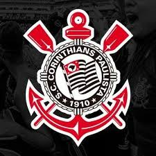

O Estado de S. Paulo, também conhecido como Estadão, é um jornal brasileiro publicado na cidade de São Paulo desde 1875. Ao lado de O Globo, Folha de S. Paulo, Zero Hora, Correio Braziliense e Estado de Minas, entre outros, forma o grupo dos principais jornais de referência do Brasil.
Media Lab Estadão, plataforma que reúne as iniciativas de branded content do Estadão, contratou o jornalista Murilo Busolin. Murilo foi repórter e social media do jornal. Ele também foi responsável pela criação e apresentador principal do programa Drops Estadão, veiculado no Instagram Stories. Com a chegada do profissional, o Media Lab passa a ter uma área específica para auxiliar as marcas a se posicionarem nas redes sociais. Antes do Estadão, Murilo atuou na Associação Ilumina e na DeCastro Assessoria de Imprensa.
E=MC2
